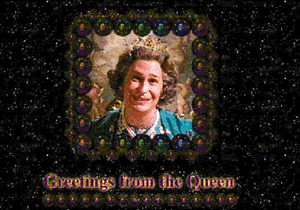
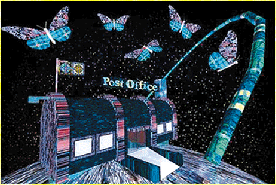
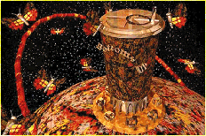

|
It should come as no surprise that Scott Thompson's Scottland has a sensibility vastly different from other celebrity Web sites. The comedian's endeavors, from small clubs in Canada to his forays into television, always seem to skate the cutting edge. A member of the sketch-comedy team The Kids in the Hall, Thompson now appears regularly on another one of Hollywood's recent experiments in high-quality comedy, The Larry Sanders Show on HBO. With the release of The Kids in the Hall movie next spring, Thompson's a busy guy, especially to keep up with a demanding Web site. IU caught up with Thompson in Los Angeles to discuss his recent venture into cyberspace.
Internet Underground: How did you get involved with the Internet and Scottland? Scott Thompson: Basically, when we wrapped our show a year ago, I wanted to do something really exciting again, something that was new. My brother was an engineer working for Hydro. He wanted to quit his job and do something for himself, so he decided to start his own company building Web sites. He asked if he could start with me. I'm not really very computer literate -- my computer is mostly used as a writing tool -- but my brother's a bit of a computer geek. I thought that this would be perfect, to do this together. So he formed this company with my cousin and it became this kind of family business, like a little mom-and-pop shop. IU: What's been your reaction to the experience so far? ST: What I like about it is that it's really raw. It's like going back to the clubs. We don't really know what we're doing, we don't make any money and only a very few people get to see what we're doing. I mean, The Kids in the Hall never became a huge, screaming mainstream phenomenon, but it was big enough. This is like starting over. IU: Have you gotten much of a response to Scottland? ST: We have, but it's difficult because of the nature of the Web. Unless you keep giving people new things, they go away and it's hard to bring them back. But we've had over 70,000 visitors and 3,500 people that have signed up as citizens of Scottland. Those people will be the ones who, through their e-mail and through me talking to them in chat lines, will help me build the site. I've been very lucky that I have some celebrity, which is perfect, since I can actually use that to advertise my site. So yeah, we've had tons of e-mail and people are very excited by it. It's just that for me personally, I haven't been able to be totally on top of it. I'm right here in L.A. now, and I'm not going to be home (in Toronto) for a couple more weeks. When I go back, I'm going to spend a couple of months working on it. But when you're just a private citizen, it's hard to have the right lines. That's what I find very difficult. I don't want to charge people. I don't want to have advertising. But at the same time it's a very expensive proposition and I'm losing money out of every pore. It's a creative thing and it's a place for me to write. I'm writing stuff for my characters, but it's becoming an unbelievably expensive hobby. IU: So have you figured out any options on that front? ST: Well, I've designed some T-shirts and I'm putting together some videos, kind of like bootlegs of old performances. I have a compilation video of 18 monologues from 1984 on, down in the clubs, and I'm selling that for like $20, although it's not moving. They're like things you'd see in fanzines or in the back of Rolling Stone, stuff like that. Bootlegs that I'm controlling. And that's one idea, but it's difficult because people get really put off by things being sold on the site. It's like public television.  IU: What do you think the advantages are of the Web, as a performer and as a writer? ST: Well, one of the advantages is that no one tells me what to do. There's no middle man. If I want to write a monologue or write a piece and then just put it onto my site for people to download, they get it. I think one of the advantages is that there's no censorship in my site, I can say whatever the fuck I want. I can kind of create a dialogue between characters that I've never really been able to. And one of the things that I've done on the site is an election we have going on... IU: I saw that. I've spent some time on the site, and I'm actually registered as a citizen, so... ST: Oh, you are! Did you listen to the debate? Because that's the coolest thing that we've done so far. I wrote this debate between the four characters that was 21 minutes long -- basically like a half-hour show -- and CBC radio let us use their technology for people to download it in real time. We recorded it on a DAT machine in my brother's house. I did all the characters with my friend Alain playing the moderator. But only 200 to 300 people have actually heard it, so it's sort of like I've done the show in a little club. Which is kind of exciting, I like that. But I don't know where it's going to go. What I want is someone to sponsor me, like an interactive company, or DreamWorks, or Maverick. Just to (have them) sponsor it as an experiment in entertainment IU: Why did you decide to do it in this style? Why create this world, with citizens, and the whole Scottland motif?  ST: I don't know. Maybe I'm just a megalomaniac. Maybe I'm a Jim Jones in the making. It is sort of like a cult, in a way, isn't it... I guess it appeals to the science-fiction nut in me. It's like being in a little spaceship broadcasting to a few people. There wasn't any real planning that way -- it just came naturally. We just had brainstorming ideas and sessions, coming up with ideas and then just going with it. The whole running for prime minister thing was just an idea to have a running soap opera. I like the idea of an ongoing story that people can help move along through audience participation. Like in the debate that I did, a lot of the questions that I asked of the characters were questions that people actually asked me through e-mail. IU: Do you think it's hard to be funny on the Web, as opposed to performing live or doing a TV show where you're allowed to be a lot more interactive? Is it kind of odd to you that you don't get direct feedback? ST: Yes, it is. It's very hard. That's what I find most difficult. (laughs) I find a lot of things most difficult. Next thing I'll say is, "What I find most difficult is that I can't wear big hats." Yeah, it is hard. The feedback comes slowly, like days later I'll read that someone liked something, but it's not immediate. Television's not immediate either, but it's a lot more so than this. My hope is that things will just get better and better, faster and faster. The one thing I'm really interested in is the CUSeeMe technology because eventually I'd like to do a little show from my house. I know that very few people will have that technology, but my hope is it'll be kind of like a cult thing. I guess it's just the idea of starting small again. I just hope that it doesn't become advertiser driven, the way television has. Although my experience (on the Web) so far gives me an understanding of why television went that way. Before I would just hate it, without understanding, but now I understand why that happened.  IU: Do you think that's where the Internet's heading? ST: I don't know. What do you think? IU: I think that people would prefer to have advertisers on sites than have to pay to get into them. I think that most people on the Internet really resist subscribing to sites. ST: I agree. That's one of the ideas that we were talking about, but I don't want to do it. I don't want to have a toll. IU: You also use a lot of fairly cutting-edge technology. ST: Yeah. You know, I've got a few savings, but this is eating into it at a very fast rate. That's scaring me. I feel very out of control and I kind of like that. I like that feeling of not knowing what I'm doing or not knowing where it's headed. And I don't want to abandon it, because I know that it's going to lead to something really exciting. IU: So what about other people that you work with or know in the entertainment industry... do they understand what you're doing? ST: Not really. Most people don't quite get it. Some do, and they're very thrilled by it. But I think a lot of people in the entertainment industry also are very threatened by it. Like one of the ideas that I had, which I would like to do like next year, is go to the Emmy Awards with my powerbook and a CUSeeMe camera to do like a really underground, subversive report on my own, through my site. But that's very threatening to the powers- that-be. They have billions of dollars invested in their world and the whole Web threatens to topple it all. Part of me likes that idea. Some things do need to come down, and maybe that'll force people in television and entertainment to sort of wake up. IU: Have you gotten a chance to spend much time on the rest of the Web? ST: I haven't done much cruising, no. My brother does that a lot, but I'm really not that computer literate. I just know that this is a different way for me to perform. You know, that thing that we did with the debate (321 Face-Off Decision 95) was in many ways just a radio play. In that way, it's strange, because it's so futuristic, but at the same time, that's very low-tech. It was like I went back to the '50s. It was just a radio play that people could listen to on their computer, except that there were no regulations, no regulatory bodies, no one telling me that I couldn't say 'fuck.' Hopefully that will last. Especially compared to American television -- the standards on American television are very... well, they're stupid. It's Puritanical. I hope the Web doesn't fall prey to that. IU: What do you think about efforts to regulate it because of the big Cyberporn debate? ST: I think that's just hysteria. Don't you? IU: I think it's an overreaction, but it is there. ST: Sure it's there. But it's everywhere. I guess, basically, I don't want that to happen because I'm going to be making porn available on my site very soon. IU: Anything in the future on the site that we should know about? Any other plans? ST: Well, we're going to elect a prime minister, but then I don't know what's going to happen except that people should be prepared for war. I think that might be the first order of business. It all depends on who's elected. I have a feeling who's going to win. What I'd then like to do is declare war on a site and see what that's like. IU: On just another, random site? ST: Yeah. IU: Well, I could definitely give you some suggestions for sites. ST: You could? No, you don't want to be responsible for that.
|